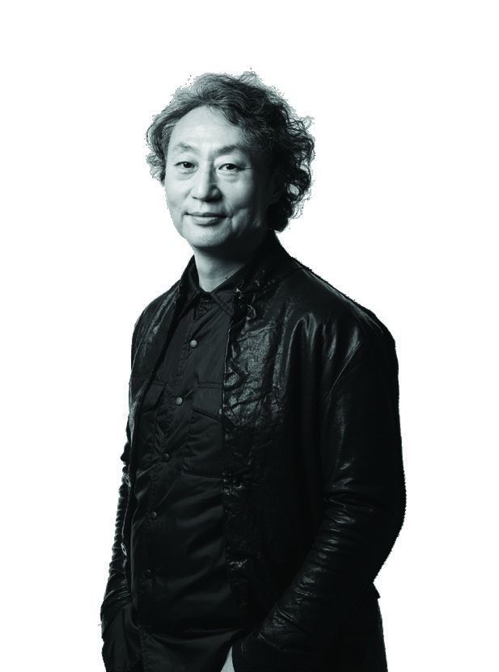
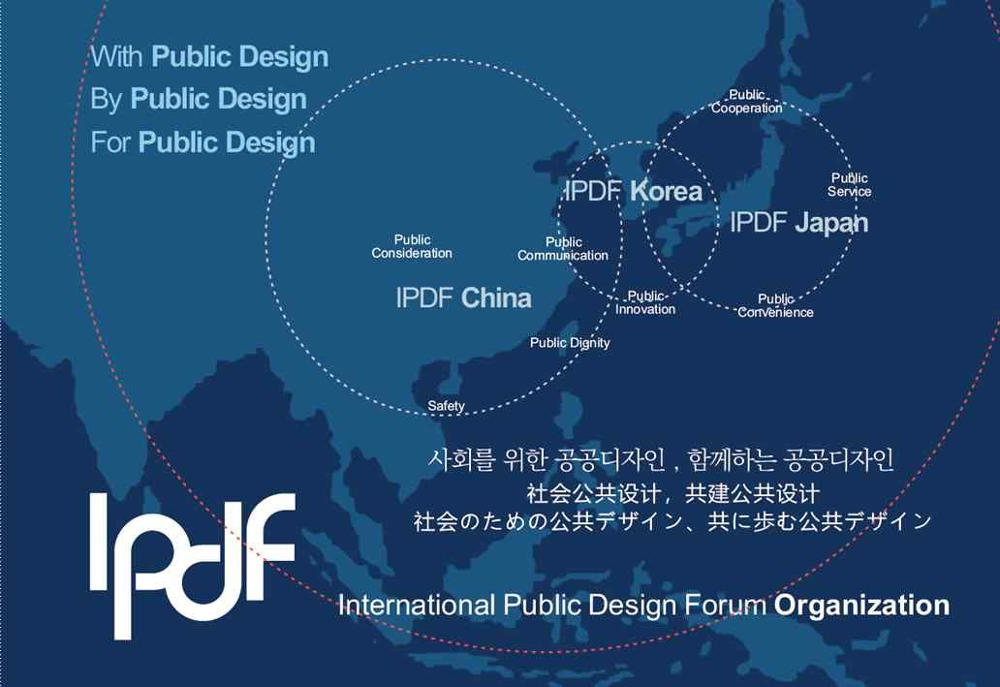

포럼 소개
공공의 이익과 안전, 배려, 편의, 품격의 가치를 디자인으로 실현하는 국제 협력의 장입니다.

인사말
안녕하십니까. 국제공공디자인포럼 의장 김주연입니다. 국제공공디자인포럼과 함께하는 모든 분께 깊은 감사의 말씀을 드립니다.
2021년 발대식을 시작으로 5년 차에 접어든 국제공공디자인포럼은 한국을 비롯한 일본, 중국, 프랑스 등 여러 나라와 공공가치 실현을 위한 국제적 연대와 교류를 펼치고 있습니다.
많은 변화가 일고 있는 현대 사회에서 공공디자인은 디자인의 선한 영향력을 넓히기 위해 노력하고 있습니다. 국제공공디자인포럼은 지속 가능한 세계를 위한 국제 사회와의 협력을 이어 가겠습니다.
공공디자인을 통해 더 좋은 세상을 만들기 위한 우리의 발걸음에 함께해 주시기 바랍니다. 감사합니다.
국제공공디자인포럼 의장김주연
사회를 위한 공공디자인,
함께하는 공공디자인
공공디자인은 공공의 이익과 안전의 공공가치를 추구하며 인류의 삶의 질을 높이는 데 기여하는 디자인입니다. 공공디자인은 도시의 삶의 질을 높이고 지속 가능한 도시를 만드는 데 기여합니다. 국제공공디자인포럼은 공공환경의 다양한 문제를 찾고, 공공과 민간의 협력을 위한 전략으로서 공공디자인을 발전시켜 우리 삶의 문제를 해결하는 대안적 가치를 지닌 문화적 공공재가 되고자 합니다.
이를 바탕으로 포럼은 안전, 배려, 편의, 품격의 공공디자인 가치를 추구하고 국제적 협력 관계를 넓혀 가고 있습니다. 2021년 한국, 중국, 일본 3개국으로 시작한 포럼은 2022년 프랑스의 참가로 현재 4개 회원국의 국제 협력 관계를 이어 오고 있습니다.
국제공공디자인포럼은 공공디자인의 방향을 제시하고, 나아가 공공디자인 문화를 위한 협력의 기초를 마련합니다. 국제적 공공디자인 문화를 창조하는 거점으로서 다양한 매체와 프로그램을 통해 공공디자인의 지식과 지혜를 나누며 사회적 가치를 높이는 데 공헌하고 있습니다.
공공디자인의 국제적 문화 확산과 미래 비전을 제시하는 자리에 함께해 주셔서 감사합니다.

발기문
한국, 중국, 일본 3개국의 공공디자인 전문가들은 공공디자인을 통해 공공가치를 실현하는 다양한 연구와 실천으로 삶의 질 향상과 지속 가능한 도시를 만드는 데 기여하기 위해 뜻을 모았습니다.
안전, 배려, 편의, 품격의 공공가치를 공공디자인을 통해 추구하고, 국제적 협력 관계로 공공디자인을 확산하고 발전시키고자 ‘국제공공디자인포럼’을 창립합니다. 포럼은 공공디자인의 방향을 제시하고 국제적 공공디자인 문화를 창조하는 시작점이 될 것입니다.
2021년 8월 28일국제공공디자인포럼 발기인 일동
국제공공디자인포럼 헌장
국제공공디자인포럼은 국제사회의 공공가치를 추구하기 위한 교류의 장으로서, 인류의 삶의 질 향상과 공공환경의 다양한 문제를 해결하기 위해 최선을 다하며 다음 원칙을 지킵니다.
- 하나.우리는 공공의 이익과 안전의 공공가치를 추구한다.We pursue public value, championing the benefit and safety inherent in public design.
- 하나.우리는 디자인을 통해 인류의 삶의 질 향상에 기여한다.We contribute to the improvement of the quality of human life through design.
- 하나.우리는 공공의 문제를 해결하기 위한 디자인을 통한 협력과 전략을 발전시킨다.We develop design strategies and collaborations to deal with the issues of the public.
- 하나.우리는 공공가치를 실현하는 다양한 연구와 실천을 위한 방안을 협력한다.We collaborate on diverse research and practice aimed at realizing public values.
- 하나.우리는 공공디자인의 방향을 제시하고 공공디자인 문화를 창조한다.We provide strategic direction and cultivate a culture of public design.
이와 같은 목표를 이루기 위해 헌장을 정하고 성실히 수행할 것을 굳게 다짐합니다. / 국제공공디자인포럼 위원회 일동
With, By, For
Public Design
국제공공디자인포럼은 IPDF Korea, IPDF China, IPDF Japan을 중심으로 운영하며, 2022년부터 프랑스가 함께합니다. 각국 위원과 전문가가 긴밀히 교류하며 외교, 문화, 교육, 학술 분야의 세부 사업을 추진하고 공유합니다.
사무국은 홍익대학교 공공디자인연구센터에 있습니다.

발기인과 위원
포럼을 함께 시작하고 이끌어 온 각국의 발기인과 위원입니다.
- 김주연Jooyun KimIPDF 의장 / 홍익대학교 교수, 공공디자인연구센터 소장
- 이현성Hyunsung Lee자문위원 / 홍익대학교 공공디자인전공 교수
- 김상아사무총장 / 홍익대학교 공공디자인연구센터
- 홍태의책임연구원 / 홍익대학교 공공디자인연구센터
- 엄지연위원 / 이오디 디자인 연구소 대표
- 강민Jiang Min노신미술대학 건축예술디자인학원 교수
- 조덕리노신미술대학 건축예술디자인학원
- 주가혜노신미술대학 교수
- 高橋儀平Gihei Takahashi토요대학 명예교수
- 菅原麻衣子Maiko Sugawara토요대학 교수
- 川内美彦Yoshihiko Kawauchi토요대학 교수
- Olivier Bedu올리비에 브뒤Cabanon Vertical 디렉터
문의 및 참가 신청
포럼 참가, 발표, 공동 개최와 협력에 관한 문의를 기다립니다.
- Office
- International Public Design Forum Committee
서울시 마포구 와우산로 94, 홍문관 1310호 (04066)
R1310, 94 Wausan-ro, Mapo-gu, Seoul, Republic of Korea - Tel
- +82 2 320 1237
- ipdfmanager@gmail.com